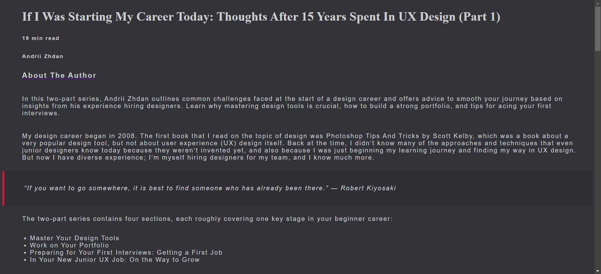
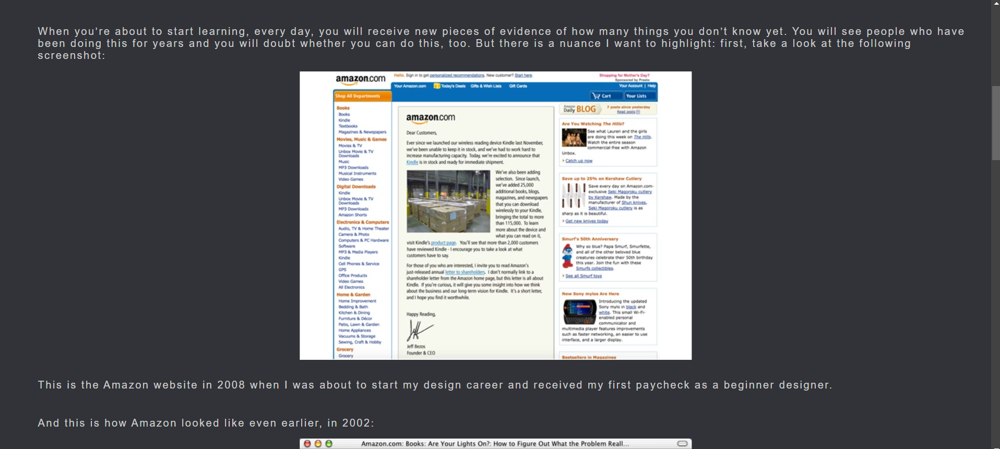
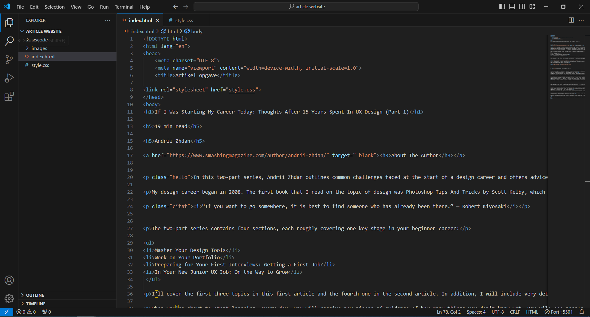

Min egen artikel side
I følgende opgave skulle vi opbygge en artikel med en givet tekst og billeder. Jeg valgte at ekspermintere lidt og brugte farverne fra Discord, fordi jeg selv synes at det har en god kontrast mellem baggrundsfarve og tekst.
Jeg løste opgaven ved at jeg først indsatte alt tekst ind i Visual Studio Code, og derefter satte elementer (p, h1, h3 osv.) til de forskellige dele af artiklen. resultatet kan ses nedenfor.
  
En ulempe ved at bruge de farver og kontraster jeg har gjort er at billeder som bruger meget lyse farver, som vist på billedet oven over, gør at man næsten biver blændet af den store kontrast. Lidt ligesome at gå ud i solskinsvejr lige efter man har været i et mørkt rum. Med citaterne har jeg laved en kasse rundt om med noget padding, med en rød border i venstre hjørne, så det står ud som noget andet og derfor lettere at identificere som et citat.
Faglige elementer jeg har udviklet viden om er kodning generelt. Jeg har aldrig arbejdet med kode før, ud over 'delete element' med 'inspect' på hjemmesider. Jeg har med den viden lært hvordan man opsætter tekst og billeder, i dette tilfælde i form af en artikel, ved hjælp af padding, margin, farver osv.
Til denne opgave følte jeg ikke der var noget der var særlig svært. Det sværeste for mig på det tidspunkt var at bruge padding og margin ordenlig, for at få paragrapherne og titlerne til at stå mere for sig selv.